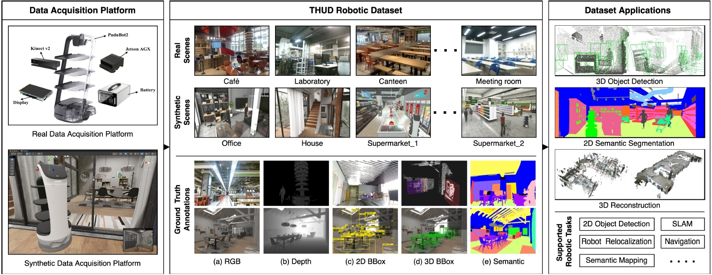

Associate Professor, Ph.D.
Tsinghua University, SIGS, Mphil/Ph.D. Supervisor--Director, Joint Research Center of Intelligent Service Robotic Technology;
--Co-founder & Chief Scientist, Fuwei Intelligent Tech. Co. Ltd (start-up);
--Technical advisor, Pudu Tech. Co. Ltd (Unicorn); Email: zenglong@sz.tsinghua.edu.cn
[中文主页] [Google Scholar] [Github]
I am an tenure-tracked PI at the Information and Data Institute, SIGs, Tsinghua. I obtained my Ph.D. degree from Hong Kong University of Sci. and Tech.. My research interest is Industrial Embodied Intelligence, to solve challenging problems in both product design and robotic manufacturing scenarios. We study new deep learning methods exploring the unique characteristics of industrial data and mainly apply in Embodied Intelligent Industrial Robotics (EIIR, e.g.Flexible Assembly), Embodied Intelligent Service Robotics (EISR), Intelligent CAD (e.g. Sketch-based Engineering Product Modeling).
Our academic results are partially industrialized and verified by industrial products. I am the Co-founder & Chief Scientist in Fuwei Intelligent Tech. Co. Ltd (EIIR start-up company), the Technical advisor in Shenzhen Pudu Tech. Co. Ltd (a Unicorn EISR company)
For Prospective Students: I am actively looking for highly self-motivated Ph.D. students, Post-doctoral, and Research Assistants(undergraduate/graduate level). Please email me with your CV and transcripts if you are interested in our research.
News
Representative Publications
Full paper list at Google Scholar.
*,# indicates corresponding and equal contribution author
2025
Imaginarium: Vision-guided High-Quality 3D Scene Layout Design
XiaoMing Zhu#, Xu Huang#, QingHongBing Xie, Zhi Deng*, JunSheng Yu, YiRui Guan, ZhongYuan Liu, Lin Zhu, QiJun Zhao, LiGang Liu, Long Zeng*.
ACM SIGGRAPH Asia 2025 and ACM Trans. Graph., Vol. 44, No. 6, (Acceptance rate: 13.58%), 2025.
Diffusion Suction Grasping with Large-Scale Parcel Dataset
Ding-Tao Huang, Debei Hua, Dongfang Yu, Xinyi He, En-Te Lin, Liang-hong Wang, Jin-liang Hou, Long Zeng*.
2025 IEEE/RSJ International Conference on Intelligent Robots and Systems (IROS), 2025.
Embodied Intelligent Industrial Robotics: Concepts and Techniques
Chaoran Zhang#, Chenhao Zhang#, Zhaobo Xu, Qinghongbing Xie, Pingfa Feng, Long Zeng*.
Submitted to International Journal of Manufacturing System (JMS, IF12.2), 2025.

HumanAesExpert: Advancing a Multi-Modality Foundation Model for Human Image Aesthetic Assessment
Zhichao Liao#, Xiaokun Liu, Wenyu Qin, Dezhi Zheng, Peixin Xie, Qingyu Li, Qiulin Wang, Pengfei Wan, Di Zhang, Long Zeng*, Pingfa Feng.
arXiv preprint:2503.23907 (arXiv), 2025.

SPF-Portrait: Towards Pure Portrait Customization with Semantic Pollution-Free Fine-tuning
Zhichao Liao#, Xiaole Xian#, Qingyu Li, Wenyu Qin, Pengfei Wan, Weicheng Xie, Long Zeng*, Linlin Shen, Pingfa Feng.
arXiv preprint:2504.00396 (arXiv), 2025.
THUD++: Large-Scale Dynamic Indoor Scene Dataset and Benchmark for Mobile Robots
Zeshun Li#, Fuhao Li#, Wanting Zhang#, Zijie Zheng, Xueping Liu, Tao Zhang, Yongjin Liu, Long Zeng*.
arXiv print, 2025.

Constraint-Aware Feature Learning for Parametric Point Cloud
Xi Cheng, Ruiqi Lei, Di Huang, Zhichao Liao, Fengyuan Piao, Yan Chen, Pingfa Feng, Long Zeng*.
2025 International Conference on Computer Vision (ICCV, 2025).

2DGS-Room: Seed-Guided 2D Gaussian Splatting with Geometric Constrains for High-Fidelity Indoor Scene Reconstruction
Wanting Zhang#, Haodong Xiang, Zhichao Liao, Xiansong Lai, Xinghui Li*, Long Zeng*.
arXiv print, 2025.
Demostrating DVS: Dynamic Virtual-Real Simulation Platform for Mobile Robotic Tasks
Zijie Zheng#, Zeshun Li#, Yunpeng Wang#, Qinghongbing Xie, Long Zeng*.
2025 Robotics: Science and Systems (RSS), 2025.

GaussianRoom: Improving 3D Gaussian Splatting with SDF Guidance and Monocular Cues for Indoor Scene Reconstruction
Haodong Xiang#, Xinghui Li#, Kai Cheng#, Xiansong Lai, Wanting Zhang, Zhichao Liao, Long Zeng*, Xueping Liu*.
IEEE Conference Robotic and Automation (ICRA), 2025.
2024
Freehand Sketch Generation from Mechanical Components
Zhichao Liao, Di Huang, Heming Fang, Yue Ma, Fengyuan Piao, Xinghui Li, Long Zeng*, Pingfa Feng.
The 32th ACM International Conference on Multimedia (ACM MM), 2024.

Reconfigurable Flexible Assembly Model and Its Implementation for Cross-Category Products
Zhaobo Xu#, Chaoran Zhang#, Song Hu#, Pingfa Feng, Long Zeng*.
Journal of Manufacturing Systems (JMS, IF 12.2), 2024.

Mobile Oriented Large-Scale Indoor Dataset for Dynamic Scene Understanding
Yi-Fan Tang#, Cong Tai#, Fang-Xin Chen#, Wanting Zhang, Tao Zhang, Yongjin Liu, Long Zeng*.
IEEE Conference Robotic and Automation (ICRA), 2024.
SD-Net: Symmetric-Aware Keypoint Prediction and Domain Adaptation for 6D Pose Estimation In Bin-picking Scenarios
Ding-Tao Huang, En-Te Lin, Lipeng Chen2, Li-Fu Liu1, Long Zeng*.
IEEE/RSJ International Conference on Intelligent Robots and Systems(IROS), 2024.

GRID:Scene-Graph-based Instruction-driven Robotic Task Planning
Zhe Ni#, Xiaoxin Deng#, Cong Tai#, Xinyue Zhu, Qinghongbing Xie, Weihang Huang, Xiang Wu, Long Zeng*.
IEEE/RSJ International Conference on Intelligent Robots and Systems(IROS), 2024.
ParametricNet++: A 6DoF Pose Estimation Network with Sparse Keypoint Recovery for Parametric Shapes in Stacked Scenarios
Yi Han Xie, Wei Jie Lv, Xin Yu Zhang, Yi Hong Chen, Long Zeng*.
IEEE/RSJ International Conference on Intelligent Robots and Systems(IROS), 2024.
[ Paper ]
[ Code & Dataset](Link to ParametricNet)
Before 2024
Attention-based deep learning for chip-surface-defect detection
Shuo Wang#, Hong Yu Wang, Fan Yang, Fei Liu, Long Zeng*.
The International Journal of Advanced Manufacturing Technology (IJAMT), pp.1957–1971, 2022.
[ Paper ]
[ Dataset] (Baidu code: gcve; Unzip code:ws980401)
ParametricNet: 6DoF Pose Estimation Network for Parametric Shapes in Stacked Scenarios
Long Zeng#, W. J. Lv, X. Y. Zhang, Y. J. Liu*.
IEEE Conference Robotic and Automation (ICRA), 2021.

PPR-Net++: Accurate 6D pose estimation in stacked scenarios
Long Zeng#, W. J. Lv, Z. K. Dong, Y. J. Liu*.
IEEE Transaction on Automation and Science (JCR Q1), 2021, pp.1-13.

PPR-Net: Point-wise Pose Regression Network for Instance Segmentation and 6D Pose Estimation in Bin-picking Scenarios
Z. K. Dong#, S. C. Liu#, T. Zhou#, H. Cheng, Long Zeng*, X. Y. Yu, H. D. Liu.
IEEE/RSJ International Conference on Intelligent Robots and Systems, Macau, China, pp. 1773-1780(IROS), 2019.

SpiderCNN: Deep Learning on Point Sets with Parameterized Convolutional Filters
Yifan Xu# (My student), Tianqi Fan, Mengye Xu, Long Zeng, Yu Qiao*.
European Conferenceon Computer Vision (ECCV), 2018.
Contribution:It is challenging to apply CNNs to domains lacking a regular underlying structures such as 3D point clouds. Thus, we propose a novel convolutional architecture,
termed SpiderCNN. A new paramerized convolutional operations is designed which can extend CNN from regular grids to irregular point sets.
SOTA performance on ModelNet40, i.e. 92:4%, was achieved (Google scholar citation >1000.).
Projects
1. 2022/11-2025/10, Hand drawn sketch collection and generation algorithm, National Key Research and Development Program "Industrial Software" Key Special Project (Project No. 2022YFB3303101), PI.
2. 2020/01-2023/12, National Natural Science Foundation of China (General Program # 61972220), Sketch-based parametric modeling with large data,PI.
3. 2016/01-2018/12, National Natural Science Foundation of China (Youth Program #61502263), Sketch-based assembly modeling with Intelligent Feature, PI.
4. 2022/01-2024/12, Research on 6D pose estimation method for parameterized parts in industrial stacking scenarios, Guangdong Natural Science General Project (No. 2022A1515011234), PI.
5. 2021/11-2024/11, Tsinghua-Purdue Intelligent Service Robot Technology Joint Research Center, a college level institution, 11.0M, Director.
Courses

《机器学习实践与应用》(Machine Learning: Practices and Applications)
Lectured in every fall semester for graduate students, starting from 2021.
It covers both machine learning methods (such as Linear Model, SVM, Bayesian classifier, Decision tree, and Cluster),
deep learning methods (such as AlexNet, ResNet et al.), and reinforcement learning. They are all organized by the same machine learning framework,
i.e. models, loss functions, and learning algorithms.

《现代CAD方法与技术》(Modern CAD Methodology and Technology)
Lectured in every spring semester for graduate students, starting from 2017.
It covers both traditional CAD methods (such as Bezier, B-spline curves and surface) and AI-based intelligent CAD methods.
Based on the basic process of hand drawn engineering product modeling, this course is divided into several research topics.
In combination with the course project, the theory and classical algorithms of each topic are explained in simple terms,
including the pretreatment of hand drawn sketch, sketch scene understanding, basic theory of B-spline curve and surface, parametric model representation,
hand drawn model acquisition and other sketch modeling technologies, deep learning and its application in hand drawn modeling.

《产品设计与开发》(Product Design and Development)
Lectured in every fall semester for graduate students, starting from 2016.
This course divides the whole process of product design and development into four stages: requirement analysis, conceptual design, detailed design and product exhibition.
The knowledge and methods used in each stage are organized and explained structurally, which is easy for students to master and apply.
The first three stages need to submit a product design progress report for each. In the stage of product exhibition, the course organizes a product design conference and
invites business people to act as judges. Excellent works have the opportunity to transform their achievements directly.
The course emphasizes the organic combination of practice and theory. Students first form a project team and are equipped with project instructors.
Students apply the knowledge and methods learned in class directly to the curriculum project. In the process of project implementation,
students will exercise team spirit, content display skills, demand insight ability, product design and development ability.
《具身智能机器人技术：算法与实践》(Embodied Intelligent Robotics: Algorithms and Practices)
Will come soon, plan to start from 2026 spring.
It covers the basic introduciton of embodied intelligent robotics, world models, perceptions, task planning, and applications.
Students (supervised or joint-supervised)
Current Ph.D. students
徐赵博、程曦、张超然
Current master students
Year 3 students: 雷睿祺、李晨睿、倪喆、黄定滔、林恩特、朱晓明、朴烽源、后胜、郑子杰
Year 1 students: 周浩、汤彦哲、关智丞、李孟瑶、程航、李在勋、霍文言、阮心仪、王舒园
Have graduated students (including joint-supervised)
Year 2025: 刘飞（工程博士）、倪喆、黄定滔、林恩特、朱晓明、朴烽源、后胜、郑子杰（驭灵科技公司）
Year 2024: 胡松、景星惠、黄家明、赖显松、谢宜含、李星辉、孙萌、张浩、唐一凡、邰聪、陈昉星、陈一泓
Year 2023: 孙震（博士）、王硕、张欣宇、杨凡、赵亮、熊鑫、王家政、郑政、李文湛、程渊术、苏俊宇
Year 2022: 吕伟杰、史丰源、甘靖钊、刘冠宏、陶佳琪、欧雪燕、张少秋、章亦晨、肖磊才
Year 2021: 付鑫、赵嘉宇、张鑫、俞佳熠、王宏羽、蒋昊雨
*,# indicates corresponding and equal contribution author
XiaoMing Zhu#, Xu Huang#, QingHongBing Xie, Zhi Deng*, JunSheng Yu, YiRui Guan, ZhongYuan Liu, Lin Zhu, QiJun Zhao, LiGang Liu, Long Zeng*.
ACM SIGGRAPH Asia 2025 and ACM Trans. Graph., Vol. 44, No. 6, (Acceptance rate: 13.58%), 2025.
Ding-Tao Huang, Debei Hua, Dongfang Yu, Xinyi He, En-Te Lin, Liang-hong Wang, Jin-liang Hou, Long Zeng*.
2025 IEEE/RSJ International Conference on Intelligent Robots and Systems (IROS), 2025.
Chaoran Zhang#, Chenhao Zhang#, Zhaobo Xu, Qinghongbing Xie, Pingfa Feng, Long Zeng*.
Submitted to International Journal of Manufacturing System (JMS, IF12.2), 2025.
Zhichao Liao#, Xiaokun Liu, Wenyu Qin, Dezhi Zheng, Peixin Xie, Qingyu Li, Qiulin Wang, Pengfei Wan, Di Zhang, Long Zeng*, Pingfa Feng.
arXiv preprint:2503.23907 (arXiv), 2025.
Zhichao Liao#, Xiaole Xian#, Qingyu Li, Wenyu Qin, Pengfei Wan, Weicheng Xie, Long Zeng*, Linlin Shen, Pingfa Feng.
arXiv preprint:2504.00396 (arXiv), 2025.
Zeshun Li#, Fuhao Li#, Wanting Zhang#, Zijie Zheng, Xueping Liu, Tao Zhang, Yongjin Liu, Long Zeng*.
arXiv print, 2025.
Xi Cheng, Ruiqi Lei, Di Huang, Zhichao Liao, Fengyuan Piao, Yan Chen, Pingfa Feng, Long Zeng*.
2025 International Conference on Computer Vision (ICCV, 2025).
Wanting Zhang#, Haodong Xiang, Zhichao Liao, Xiansong Lai, Xinghui Li*, Long Zeng*.
arXiv print, 2025.
Zijie Zheng#, Zeshun Li#, Yunpeng Wang#, Qinghongbing Xie, Long Zeng*.
2025 Robotics: Science and Systems (RSS), 2025.
Haodong Xiang#, Xinghui Li#, Kai Cheng#, Xiansong Lai, Wanting Zhang, Zhichao Liao, Long Zeng*, Xueping Liu*.
IEEE Conference Robotic and Automation (ICRA), 2025.
Zhichao Liao, Di Huang, Heming Fang, Yue Ma, Fengyuan Piao, Xinghui Li, Long Zeng*, Pingfa Feng.
The 32th ACM International Conference on Multimedia (ACM MM), 2024.
Zhaobo Xu#, Chaoran Zhang#, Song Hu#, Pingfa Feng, Long Zeng*.
Journal of Manufacturing Systems (JMS, IF 12.2), 2024.
Yi-Fan Tang#, Cong Tai#, Fang-Xin Chen#, Wanting Zhang, Tao Zhang, Yongjin Liu, Long Zeng*.
IEEE Conference Robotic and Automation (ICRA), 2024.
Ding-Tao Huang, En-Te Lin, Lipeng Chen2, Li-Fu Liu1, Long Zeng*.
IEEE/RSJ International Conference on Intelligent Robots and Systems(IROS), 2024.
Zhe Ni#, Xiaoxin Deng#, Cong Tai#, Xinyue Zhu, Qinghongbing Xie, Weihang Huang, Xiang Wu, Long Zeng*.
IEEE/RSJ International Conference on Intelligent Robots and Systems(IROS), 2024.
Yi Han Xie, Wei Jie Lv, Xin Yu Zhang, Yi Hong Chen, Long Zeng*.
IEEE/RSJ International Conference on Intelligent Robots and Systems(IROS), 2024.
[ Paper ] [ Code & Dataset](Link to ParametricNet)
Shuo Wang#, Hong Yu Wang, Fan Yang, Fei Liu, Long Zeng*.
The International Journal of Advanced Manufacturing Technology (IJAMT), pp.1957–1971, 2022.
[ Paper ] [ Dataset] (Baidu code: gcve; Unzip code:ws980401)
Long Zeng#, W. J. Lv, X. Y. Zhang, Y. J. Liu*.
IEEE Conference Robotic and Automation (ICRA), 2021.
Long Zeng#, W. J. Lv, Z. K. Dong, Y. J. Liu*.
IEEE Transaction on Automation and Science (JCR Q1), 2021, pp.1-13.
Z. K. Dong#, S. C. Liu#, T. Zhou#, H. Cheng, Long Zeng*, X. Y. Yu, H. D. Liu.
IEEE/RSJ International Conference on Intelligent Robots and Systems, Macau, China, pp. 1773-1780(IROS), 2019.
Projects
Courses